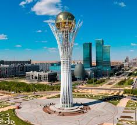
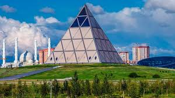
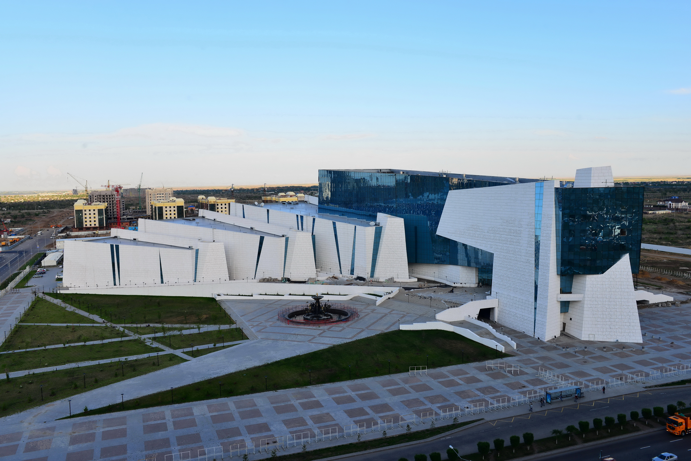
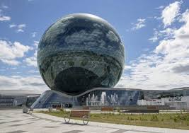
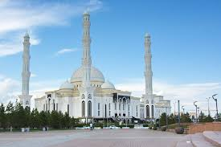

Астана
Астана — крупнейший город и столица Казахстана.В 2017 году город стал центром мирового внимания благодаря ЭКСПО, посвящённому новым технологиям в энергетике..
Население: около 1,3 миллионов человек
Основан: в 1824 году как укреплённое поселение Акмолинск.
История
Территория современного города была заселена людьми ещё в эпоху бронзы и Средневековья. Здесь проходили торговые пути Великого шелкового пути.1997 году Президент Казахстана Нурсултан Назарбаев принял решение перенести столицу из Алматы в Акмолу, чтобы стимулировать развитие северных регионов и создать более равномерное распределение населения.1998 году город получил название Астана, что в переводе с казахского означает «столица».В 2019 году Астана была переименована в Нур-Султан в честь первого президента Казахстана.На сегодняшний день город называется Астана.
Достопримечательности
-

Байтерек - символ города и страны.
-

Хан Шатыр - Огромный торгово-развлекательный центр в виде прозрачного шатра.
-

Дворец Мира и Согласия - Пирамидальная постройка, символ гармонии всех религий.
-

Национальный музей РК - Крупнейший музей страны, открытый в 2014 году.
-

ЭКСПО-2017 в Астане - международная выставка на тему «Энергия будущего», которая собрала более 100 стран и превратила город в центр инноваций и устойчивой энергетики.
-

Одна из крупнейших мечетей в СНГ: мрамор, купола, восточная архитектура.
Культура
Культура Астаны — это сочетание традиционного казахского наследия и современного урбанистического облика столицы. Город активно развивается как культурный центр страны.
Интересные факты
- Город менял название 6 раз: Астана → Нур-Султан → Астана снова. До этого были названия: Акмолинск, Целиноград, Акмола.
- Город считается «сердцем» казахстанского IT и креативных индустрий
- Сильные порывы ветра — обычное дело, поэтому здания часто имеют аэродинамичную форму.